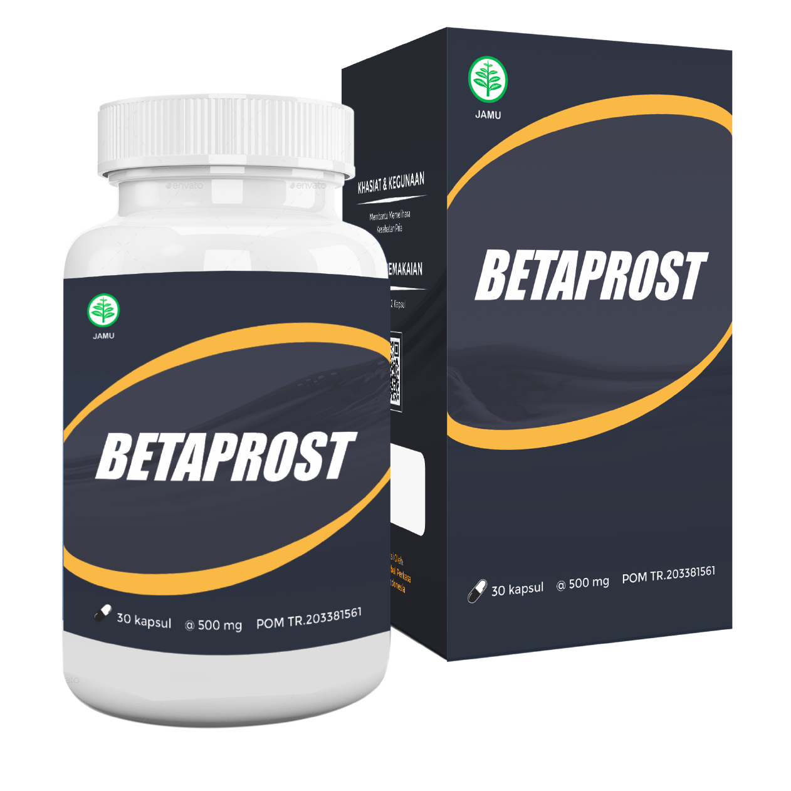

Direktur Pusat Prostat dan Onkologi, anggota Presidium Urological College, profesor dan ahli bedah dari Eropa, Singapura dan Amerika Serikat. Melakukan operasi berikut: prostatektomi radikal, menggunakan robot TURP (reseksi prostat transurethral) dari prostat dan ablasi laser dari adenoma prostat.
Prostatitis membawa masalah yang berbeda ke dalam hidup Anda, seperti:
● IMPOTENSI
● PROSTATAT HYPERPLASIA
● KANKER PROSTAT

Kabar buruknya, 96,7% pria yang menderita prostatitis cepat atau lambat akan mengalami impotensi. .
Kanker prostat terjadi pada tahap akhir peradangan kelenjar prostat, yang merupakan akibat umum dari prostatitis yang tidak diobati. Pria yang mengabaikan prostatitis sebenarnya mempertaruhkan nyawa mereka. Jika Anda ingin hidup panjang dan sehat, jika Anda ingin memiliki ereksi yang tepat dan libido yang normal, Anda perlu mengobati radang prostat. Semakin cepat Anda melakukannya, semakin baik.
Masalahnya adalah meskipun sebagian besar orang mengetahui tentang masalah ini, mereka masih tidak pergi ke dokter. Hal ini terjadi karena beberapa orang tidak menganggap radang prostat sebagai penyakit berbahaya, dan memperlakukan masalah ini seolah-olah itu adalah sesuatu yang memalukan dan perlu disembunyikan. Akibatnya, kebanyakan pasien melupakan penyakitnya tanpa perawatan yang tepat, dan ketika mereka memutuskan untuk mencari bantuan (jika ini terjadi), seringkali sudah terlambat dan kanker sudah mulai berkembang.
Kita harus memahami bahwa prostatitis adalah penyakit yang mengancam jiwa yang dapat berubah menjadi kanker. Jika tidak diobati, penyakit ini dapat menyebabkan kanker hanya dalam waktu 1-2 tahun, yang seringkali berujung pada kematian penderitanya.
Sekarang pria memiliki kesempatan unik baru untuk mencegah dan mengobati pembesaran prostat untuk selamanya – bahkan tanpa pemeriksaan rutin di rumah sakit.
Pada tahun 2019 sebuah produk revolusioner muncul di pasaran, yang dengan cepat mengembalikan fungsi prostat, menghilangkan peradangan dan membantu mengobati prostatitis bahkan jika sudah menjadi kronis. Ini juga memperkuat kekuatan kejantanan dan memperpanjang hubungan seksual. Produk alami ini disebut Betaprost. Produk yang nyaman dan sederhana ini dapat digunakan di mana pun Anda berada, dan sepenuhnya tersedia untuk siapa saja. Proyek dan pengujian berlangsung selama dua tahun dan dilakukan oleh dokter
Tahun ini, Asosiasi dokter dan ahli bedah berhasil menyelesaikan uji klinis produk generasi baru Betaprost, yang diciptakan untuk mengobati prostatitis dengan cara yang paling efektif. Pernyataan berikut diterbitkan oleh layanan pers Institut:
1.Betaprost terbukti efektif pada 98% kasus. Persentase diukur dengan menggunakan metode standar (jumlah laki-laki yang sembuh dibandingkan dengan jumlah total pasien dalam kelompok 100 laki-laki yang diobati).
2. Dalam 96% kasus, tidak ada gejala sama sekali setelah penghentian terapi (persentase yang diperoleh berdasarkan pengamatan yang dilakukan dalam enam bulan).
3.Setelah seminggu menggunakan obat, semua pasien melihat peningkatan libido dan kekuatan jantan yang signifikan.
4.Pada 95% kasus terjadi peningkatan durasi hubungan seksual.
5.Tidak ada efek samping atau reaksi alergi yang diamati.
6. Betaprost terbukti menjadi produk revolusioner dan harus dianggap sebagai salah satu alat utama untuk melawan prostatitis.
Pengalaman kerja — 18 tahun. Dia sangat terkenal di kalangan medis, karena dia adalah ahli bedah terbaik dari operasi sistem genitourinari, termasuk yang invasif minimal.
Anggota Masyarakat Urologi, Asosiasi Onkologi Urologi dan Asosiasi Urologi Singapura (AAU).
Untuk waktu yang lama tidak ada solusi yang efektif dan terjangkau untuk pengobatan prostatitis, telah menyebabkan efek berkepanjangan yang sangat mengerikan. Penyakit ini telah berkembang pada 45% populasi orang dewasa, dan bahkan lebih buruk pada 25% orang muda. Betaprost adalah revolusi dalam pengobatan prostatitis, obat mujarab yang nyata. Efektivitas tetes telah diuji pada praktik baik di AS maupun di Eropa. Komposisi unik mereka dan penemuan sel hidup oleh para ilmuwan membuat Betaprost sangat diperlukan dalam memerangi prostatitis.

Produk telah diuji dan hasilnya luar biasa. Sekitar 98% dari semua pasien sembuh, dan penyakitnya tidak kembali. Dan gejalanya hilang sama sekali, begitu juga dengan radang kelenjar prostat. Dalam kasus kambuh, setelah penggunaan lebih lanjut dari Betaprost, gejalanya hilang selamanya.
Selain itu, karena kompleks komponen alami yang kuat, Betaprost meningkatkan kekuatan kejantanan dan memperpanjang durasi hubungan seksual.
Betaprost adalah metode yang sangat efektif, karena memecahkan masalah di semua tahap. Ini memiliki efek terapeutik yang belum pernah terjadi sebelumnya pada seluruh sistem genitourinari pria. Dengan kata sederhana, setelah menjalani pengobatan alami ini, tubuh pria mulai bekerja dengan cara yang sama seperti pria muda berusia 25 tahun. Itu sebabnya saya sangat merekomendasikannya kepada semua pria. Bahkan jika Anda tidak menderita prostatitis, pengobatan dengan obat ini adalah pencegahan dan peningkatan yang sangat baik untuk kekuatan jantan.
Selain itu, produk telah lulus semua tes untuk mendapatkan sertifikat yang paling penting. Tes klinis telah sepenuhnya mengkonfirmasi keefektifan produk.
Para pria terkasih, jangan abaikan kesehatan Anda. Jangan salahkan diri Anda karena merasa lemah dan jangan membahayakan diri Anda! ANDA HARUS MENJAGA KESEHATAN ANDA!
Saat ini, Betaprost ortogonal hanya dapat dipesan melalui situs web resmi pabrikan.
